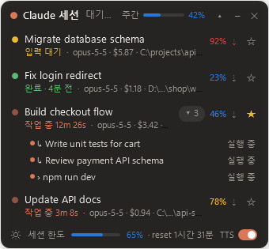
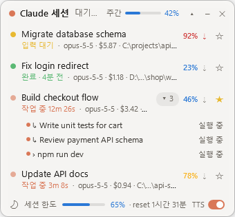

클로드 코드 세션을 한눈에
항상 위에 떠 있는 Windows 오버레이입니다. 어떤 Claude Code 세션이 작업 중이고 어떤 세션이 내 입력을 기다리는지, 컨텍스트가 얼마나 찼는지, 사용량 한도가 얼마나 남았는지 보이고, 누르면 그 세션으로 바로 갑니다.


기능
세션 현황
CLI 세션과 Claude 데스크톱 앱 Code 탭 세션 중 작업 중, 입력 대기(권한 확인·질문), 끝났는데 아직 확인하지 않은 세션을 보여 줍니다. ★ 즐겨찾기는 항상 보입니다.
눌러서 이동
그 세션을 앞으로 가져옵니다. 데스크톱 앱 분할 화면에 떠 있는 세션이면 그 화면의 입력창으로 포커스를 옮깁니다.
컨텍스트
세션마다 자동 압축 기준으로 잰 컨텍스트 %를 데스크톱 앱 사용량 표시와 같은 색으로 보여 줍니다.
사용량 한도
머리 줄에 주간 사용량, 맨 아래 줄에 5시간 세션 한도를 보여 줍니다.
백그라운드 작업
백그라운드 서브에이전트, 셸, 파생 세션을 상위 세션 아래에 접어 둡니다.
알림
세션이 끝나거나 입력을 기다리거나 압축이 가까워지면 짧은 소리와 음성으로 알립니다. 화면 잠금·절전·모니터 꺼짐 중에는 울리지 않습니다.
방해하지 않기
게임 같은 전체 화면 앱 앞에서는 숨고, 트레이로 최소화하거나 한 줄로 접을 수 있습니다. Windows 시작 시 실행도 됩니다.
다크/라이트, 한국어/영어
맨 아래 버튼으로 테마를 바꾸고, 머리 줄 오른쪽 클릭 메뉴에서 테마와 언어를 고릅니다.
설치
ClaudeSessionOverlay.exe를 받아 실행합니다. 파일 하나라 원하는 폴더에 두면 됩니다. README와 선택 사항인 Mod가 든 zip은 릴리스 페이지에 있습니다.- 선택: 트레이 아이콘 메뉴에서 Windows 시작 시 실행을 켭니다.
서명되지 않은 앱이라 처음 실행할 때 Windows SmartScreen 경고가 뜰 수 있습니다. 추가 정보 → 실행을 누르면 됩니다. 소스에서 빌드하려면:
git clone https://github.com/jsuk10/claude-overlay.git
cd claude-overlay
dotnet publish app -c Release -o bin동작 방식
오버레이는 Claude Code와 Claude 데스크톱 앱이 원래 남기는 로컬 파일만 읽습니다. 네트워크 요청을 보내지 않고, 로그인 정보도 건드리지 않습니다.
| 정보 | 출처 |
|---|---|
| 세션과 상태 | ~/.claude/sessions/<pid>.json |
| 모델, 컨텍스트 토큰, 백그라운드 작업 | ~/.claude/projects/<프로젝트>/<세션>.jsonl |
| 컨텍스트 창, 자동 압축 기준 | ~/.claude/cache/model-catalog/*.json, ~/.claude/settings.json |
| 주간·5시간 사용량 | Claude 데스크톱 앱의 plan-usage-history.json |
함께 들어 있는 선택 사항인 Claude Code Mod session-hud를 설치하면 세션별 비용, 사용량 한도 초기화 시각, 압축 버튼이 더해집니다.
자주 묻는 질문
클로드 코드 세션의 컨텍스트 사용량은 어떻게 보나요?
세션마다 % 숫자가 보입니다. Claude Code가 대화를 자동 압축하는 지점을 100%로 잡은 값이고, 75% 미만은 파랑, 90% 미만은 노랑, 그 이상은 빨강입니다.
Windows에서 클로드 주간 사용량과 5시간 한도를 볼 수 있나요?
네. 머리 줄에 주간 사용량, 맨 아래 줄에 5시간 세션 한도가 보입니다. Claude 데스크톱 앱이 남기는 로컬 사용량 기록을 읽습니다.
Claude Code CLI와 데스크톱 앱 둘 다 되나요?
네. 어느 터미널에서 띄운 CLI 세션이든, 데스크톱 앱 Code 탭 세션이든 한 목록에 함께 보입니다.
맥(macOS) 버전도 있나요?
아직은 Windows 전용입니다.